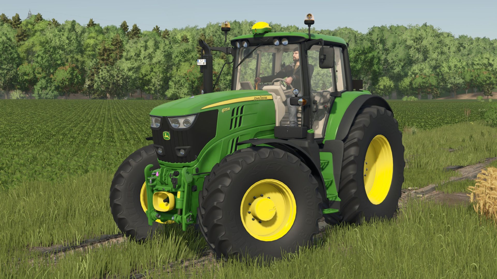
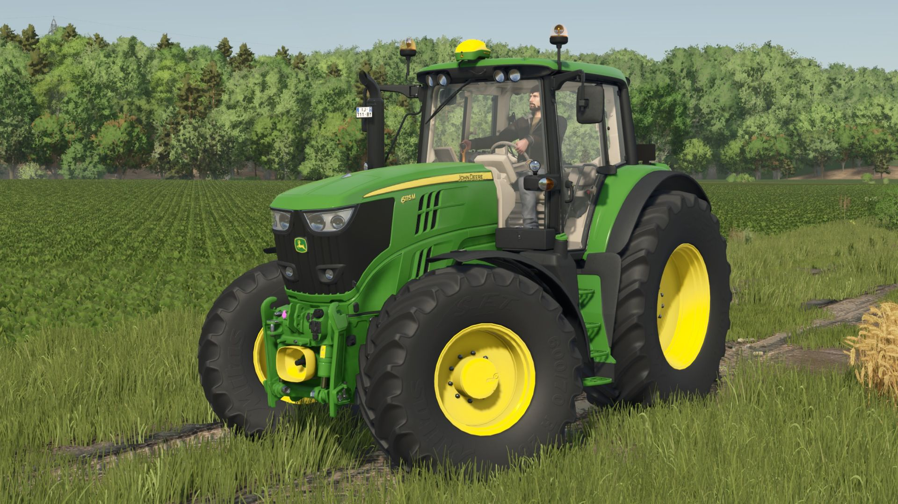

Nowa aktualizacja FS25
Dodano nowe maszyny i mapy. Sprawdź wszystkie nowości w grze!
 

Dodano nowe maszyny i mapy. Sprawdź wszystkie nowości w grze!
Nowe dlc w którym dodali Maszyny mercedesa.
Mod A Dokładniej paczka PGR! Możliwa do Pobrania nie długo!

Opis: Paczka PGR to paczka która zawiera mody typu ursusy, stare hale itp.
Pobierz